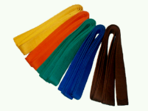

Im Judo trägt man Grundsätzlich ein Judogi (auch Kimono genannt). Dieses Judogi besteht aus 2 Teilen (3, wenn man den Gürtel dazuzählt); eine weisse, knöchellange Baumwollhose (jap. Zubon), darüber eine halblange, weisse Baumwolljacke (jap. Uwagi) und einen Gürtel (jap. Obi), welcher die Jacke zusammenhält. Damit man bei Wettkämpfen zwei Judokas unterscheiden kann, trägt, der als zweite aufgerufene Judoka meistens ein Judogi in blauer Farbe. In dem Bild unten sieht man ein Judogi!

Im Judo gibt es Schüler- und Meistergrade, welche alle eine spezielle Bezeichnung haben.
Der erste Gurt ist der weisse Gurt. In dem Bild links sieht man einige der Gürtelfarben (Nur Rot und Schwarz sind Meistergrade) in
Deutschland. Bei uns in der Schweiz ist der Unterschied nicht gross; der gelb-orange Gürtel
ist weiss-orange in der Schweiz und der orange-grüne Gürtel ist weiss-grün in der Schweiz.
Ausserdem haben wir hier in der Schweiz auch noch einen halb-blauen Gürtel. Die meisten
dieser Schülergrade kann man in jungen Jahren erhalten, entweder nach einer Prüfung oder
durch Vorzeigen der Techniken im Training.
Im Judo gibt es auch Meistergrade; Zum Beispiel Fukuda Keiko erhielt 2011 im Alter von 98
Jahren den 10. Dan. Das heisst insgesamt gibt es 9 bis 11 Schülergrade (Kyūs), denn einige Länder haben es anders und mindestens 10 Meistergrade (Dans).